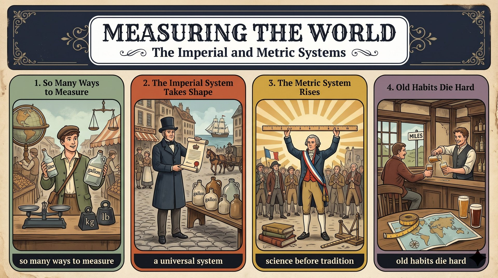

政府、科學家和消費者測量的方式都不同，研究者指出世界最後形成兩大系統。
ended up with two main systems英制由各地舊單位發展而來，貿易擴大後，1824 年的法案確立了通用標準。
a universal standard公制在法國大革命後出現，用字首以十進位換算，比英制容易。
logic before tradition美國、緬甸、賴比瑞亞尚未全面採用公制，英國酒吧仍賣品脫啤酒，制度因歷史與習慣而持續存在。
reflect history and daily habitsGovernments, scientists, and shoppers (S) + do not measure (V) + weight, length, or volume (O)。
around the world 修飾主詞，要提到最前面；in the same way 放動詞前。
in the same way 介系詞用 in；volume 在此是容量。
Governments, scientists, and shoppers（主詞）around the world（後位修飾）do not measure ... in the same way.（主幹）weight, length, or volume（受詞）語塊 2 超車 ➔ 語塊 1 ➔ 語塊 3 動詞 ➔ 語塊 4 ➔ 語塊 3 收尾
報導開頭要先交代範圍，所以從「世界各地的」開始。
in the same way：以相同的方式。否定句並列用 or。Researchers (S) + report (V) + that 子句 (O)；子句內 the world + ended up with + two main systems。
who 是主格關代，修飾 Researchers；that 是名詞子句；冒號後是同位語。
end up with＋N.；report 後接 that 完整句；who 子句修飾複數，動詞 study 不加 s。
Researchers who study this history（主詞＋關代子句）report that（主幹）the world ended up with two main systems:（名詞子句）imperial and metric.（同位語）語塊 1 超車 ➔ 語塊 2 ➔ 語塊 3 ➔ 語塊 4
主詞帶關代子句，中文要先說清楚是哪些人。
report that S＋V：報導、指出。end up with：最後得到。Researchers report that ... 引出研究結果。The imperial system (S) + grew out of (V) + older units (O)。
used in Britain 是省略 which were 的過去分詞片語；where 是關係副詞。
grow out of 由……發展；where 後面是完整句；differ from A to B。
The imperial system grew out of（主幹）older units used in Britain,（受詞＋分詞片語）, where gallons and pounds often differed（where 子句）from region to region.（from A to B）語塊 1 ➔ 語塊 2 超車 ➔ 語塊 3 ➔ 語塊 4
從主詞開始，「英制由……發展而來」。
from region to region：各地不同；differ from region to region：因地而異。A grew out of B used in C.Those differences (S) + caused (V) + few problems (O)。
while 在此表示「在……期間」，因為前後是同一時期的事。
few 修飾可數名詞，表「幾乎沒有」；remain 是連綴動詞，後接形容詞 local。
while exchanges between towns remained local,（while 時間子句）Those differences（主詞）caused few problems（動詞＋受詞）語塊 1 超車 ➔ 語塊 2 ➔ 語塊 3
英文把條件放後面，中文要先講條件。
few＝幾乎沒有；a few＝一些。a universal standard (S) + was needed (V)，an act of 1824 (S) + established (V) + one (O)。
As 表隨著；however 是插入的轉折副詞；and 連接兩個子句。
one 代替 a standard，避免重複。
As trade expanded, however,（As 子句＋轉折）a universal standard was needed,（主幹①）and an act of 1824（主幹②主詞）formally established one.（動詞＋受詞）語塊 1 ➔ 語塊 2 ➔ 語塊 3 ➔ 語塊 4
轉折要先講，所以從「然而」開始，雖然它在英文裡排第二。
one 代替前面提過的可數單數名詞。the metric system (S) + emerged (V)。
based on ... 是分詞片語；that 是同位語子句，說明 the idea。
based on the idea that ... 要先翻 idea 的內容。
A come before B；the idea that＋完整句。
In France,（地點）the metric system emerged after the Revolution,（主幹）based on the idea（分詞片語）that logic should come before tradition.（that 同位語子句）語塊 1 ➔ 語塊 2 ➔ 語塊 3 開頭 ➔ 語塊 4 超車 ➔ 語塊 3「理念」收尾
地點先講，再說公制出現。
based on：以……為基礎。A come before B：A 優先於 B。the idea that ... 是論述常用的句型。Its prefixes (S) + scale (V) + units (O)，後句 conversions (S) + are (V) + simple (C)。
so 表結果，連接前後兩句。
Its prefixes（主詞）scale units by powers of 10,（動詞片語）so conversions are simple.（so 子句）語塊 1 ➔ 語塊 2 方式提前 ➔ 語塊 3
主詞的 Its 要先還原成「公制的」。
scale（v.）按比例調整。powers of 10：十的次方。A ..., so B ...。the metric system (S) + requires (V) + only basic math (O)。
While 在此表對比（＝whereas）。
only 放在要限定的名詞前；memorization 是名詞。
While the British system requires memorization,（While 對比子句）the metric system requires（主幹）only basic math.（受詞）語塊 1 ➔ 語塊 2 ➔ 語塊 3
這句順翻，兩個主詞各講一次。
while 表對比時，常和 whereas 互換。While A requires ..., B requires only ...it (虛主詞) + is noted (V) + that 子句 (真主詞)。
that 引導名詞子句當真主詞。
adopt 採用；not fully 譯「尚未全面」。
Today,（時間）it is noted that（虛主詞句型）the United States, Myanmar, and Liberia（子句主詞）have not fully adopted metric units.（子句動詞）語塊 1 ➔ 語塊 2 ➔ 語塊 3 ➔ 語塊 4（全句順翻）
先講「如今」。
It is noted that S＋V：表示普遍看法。adopt：採用。It is noted that 代替 I think。Liberia's system (S) + traces (V) + back to the United States。
for example 是插入語；, which 是非限定關代，修飾 the United States。
trace back to 主動；which 指單數國家，動詞用 uses。
Liberia's system, for example,（主詞＋插入語）traces back to the United States,（動詞片語）, which uses its own customary units.（which 子句）語塊 1 內部調序 ➔ 語塊 2 ➔ 語塊 3
for example 要先翻，「例如」放最前面。
trace back to：追溯到。customary：習慣的、慣用的。pubs (S) + pour (V) + beer (O)，後句 road signs (S) + show (V) + miles (O)。
and 連接兩個對等子句。
Even in Britain 順翻；by the pint 放動詞前。
by the pint 用 the 表計量單位；pubs 是複數，動詞 pour 不加 s。
Even in Britain,（地點）pubs still pour beer（主幹①）by the pint,（計量片語）and road signs show miles.（主幹②）語塊 1 ➔ 語塊 2 主詞 ➔ 語塊 3 超車 ➔ 語塊 2 動詞 ➔ 語塊 4
地點和語氣一起講，「就連在英國」。
by the＋單位：sell by the pound（按磅賣）、pay by the hour（按時計酬）。Analysts (S) + conclude (V) + that 子句 (O)。
that 名詞子句；子句內 because 表原因。
reflect 及物。
Analysts conclude that（主幹）these systems endure（名詞子句）because they reflect history and daily habits.（because 子句）語塊 1 ➔ 語塊 2 ➔ 語塊 3
報導收尾先交代是誰的結論。
endure：持續（不及物）；忍受（及物）。1. 請選出最適合填入 (1) 的字：
report that S＋V。pour、scale、emerge 都不接 that 子句。2. 請選出最適合填入 (2) 的字：
differ from。3. 請選出最適合填入 (3) 的片語：
end up with＋N.：結果收到罰單。4. 請選出最適合填入 (4) 的字：
be traced back to：可追溯到。5. 請選出最適合填入 (5) 的字：
which。6. Trade ________ between the two nations doubled after the new agreement was signed.
trade exchanges。7. After the school moved online, a new way of teaching quickly ________.
8. This map ________ distances so that one centimeter equals ten kilometers.
scale：按比例調整，對應課文 scale units。9. The company was ________ in 1982 and now has offices in ten countries.
be established in＋年份：成立於。10. 下列哪一句的 while 表示「在……期間」？
11. 下列哪一句文法正確？
by the＋單位 用 the。12. 「隨著貿易擴大，人們需要一套通用的標準。」最佳英譯是：
13. According to the report, why did gallons cause few problems at first?
14. Why do conversions in the metric system seem simple?
15. What do analysts conclude about these systems?